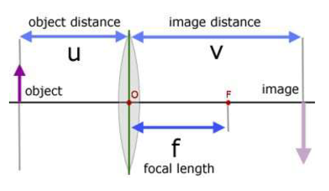

To calculate focal length of a biconvex lens by observing image formation by the lens on an IoT enabled optical bench.
The main physics behind the experiment can be summarized as:
To calculate the focal length of a lens you should be familiar with basic concepts of refraction of light from a lens and lens formula which will be used to calculate the focal length by obtaining object and image distances with proper sign convention. The lens formula is given by:
$$\frac{1}{f}=\frac{1}{v}-\frac{1}{u}$$
